F01 · Acceso · Google configurado
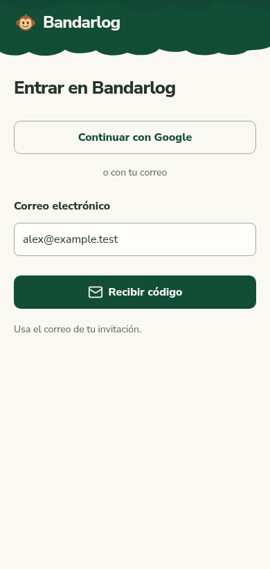
Variante con Google configurado; datos sintéticos.
F02 · Código dentro de la PWA
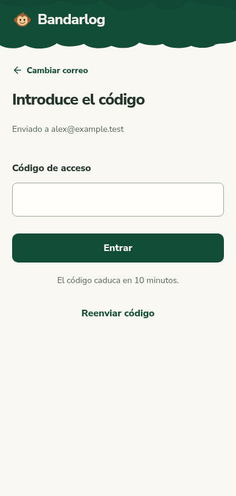
Composición móvil a390px. Datos sintéticos; controles sin acciones reales.
F03 · Aceptar invitación
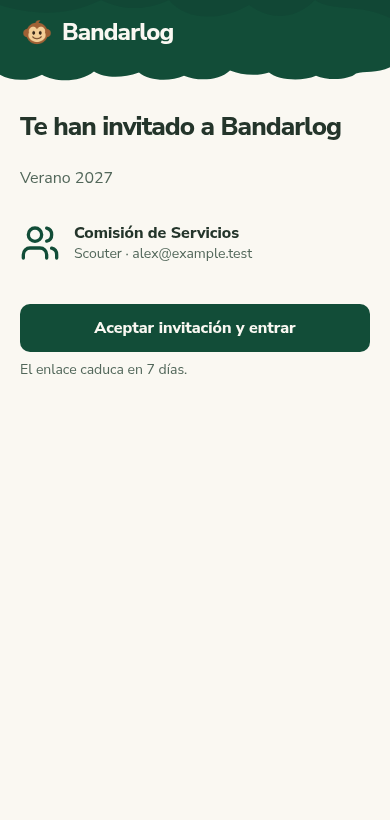
Composición móvil a390px. Datos sintéticos; controles sin acciones reales.
F04 · Primer acceso · nombre y foto
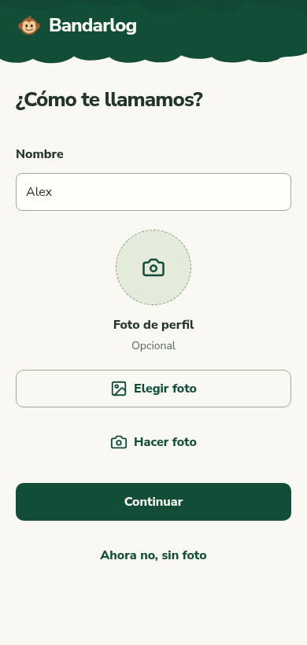
Composición móvil a390px. Datos sintéticos; controles sin acciones reales.
F05 · Editor de foto · cancelación
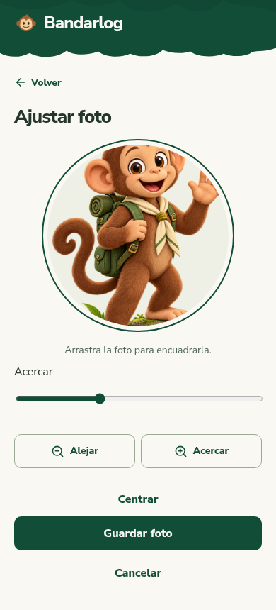
Imagen de prueba: mascota original, no foto de una persona. Cancelar vuelve a VRETURN con Alex intacto. Recorte funcional pendiente de implementación.
F06 · Inicio · tareas personales

Composición móvil a390px. Datos sintéticos; controles sin acciones reales.
F07 · Última tarea · satisfacción
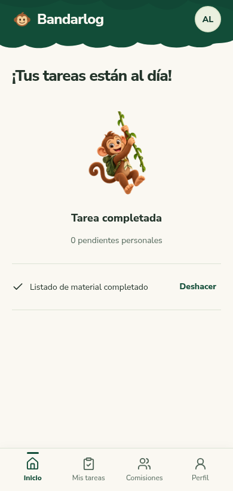
Secuencia de satisfacción: VLAST muestra 1; F07 muestra 0; F08 conserva la confirmación personal tras 2,6s. Estos frames estáticos no prueban tiempo ni interrupción.
F08 · Inicio · equipo en consulta
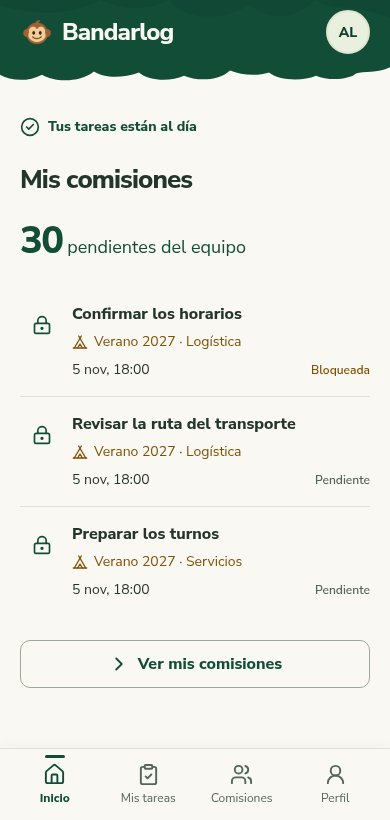
Scouter: sin controles para completar tareas ajenas.
F09 · Inicio · campamento autorizado
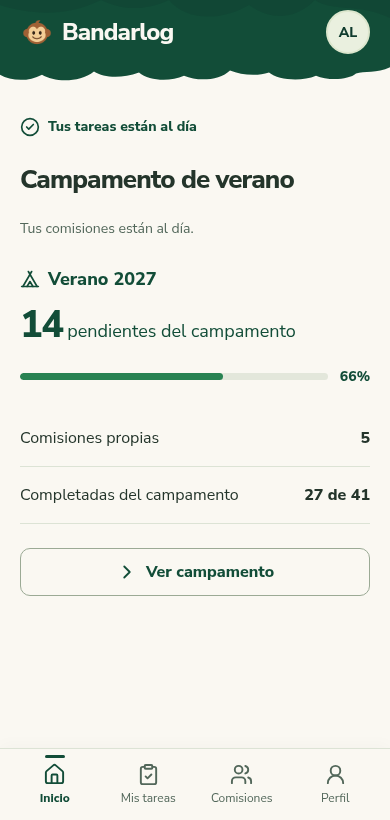
Etapa camps del fixture: 60tareas propias/comisiones terminadas; campamento41total/27done/14open. Se muestran solo agregados autorizados.
F10 · Todo al día
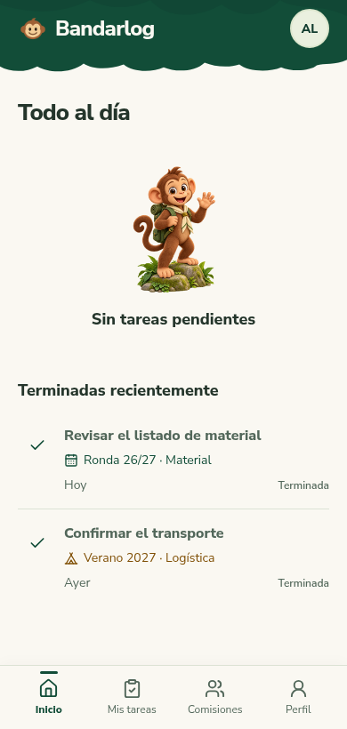
Historial ilustrativo de tareas reales de la cuenta en producción; no fabricar datos.
F11 · Mis tareas · lista única
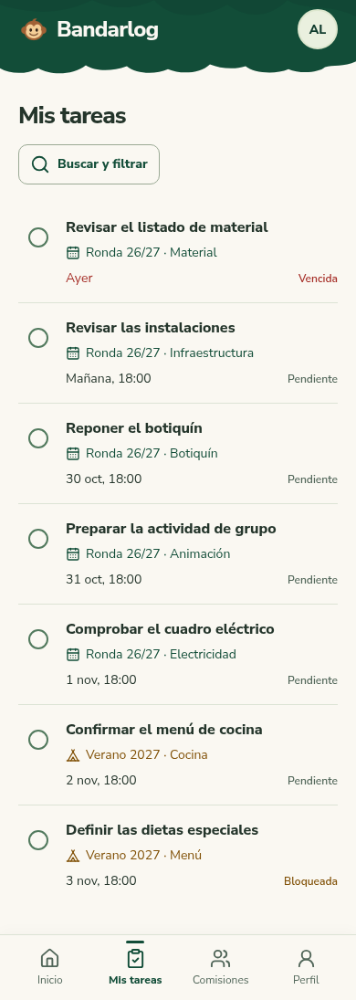
Siete tareas personales abiertas del fixture, por fecha, de cinco comisiones anuales y Cocina/Menú del campamento. No se insertan tareas ajenas en esta lista.
F12 · Detalle de tarea · asignada
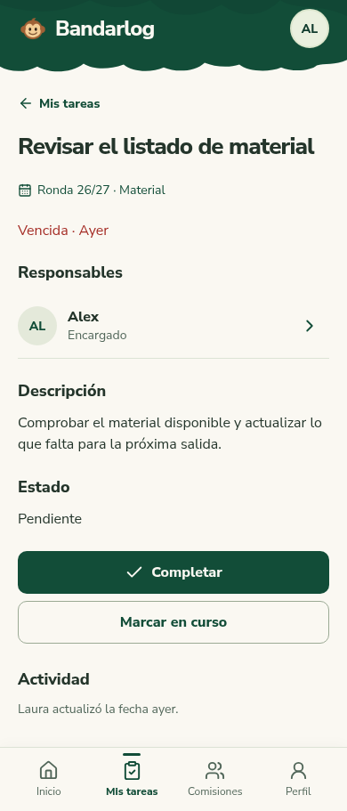
Composición móvil a390px. Datos sintéticos; controles sin acciones reales.
F13 · Comisiones · diez agrupadas
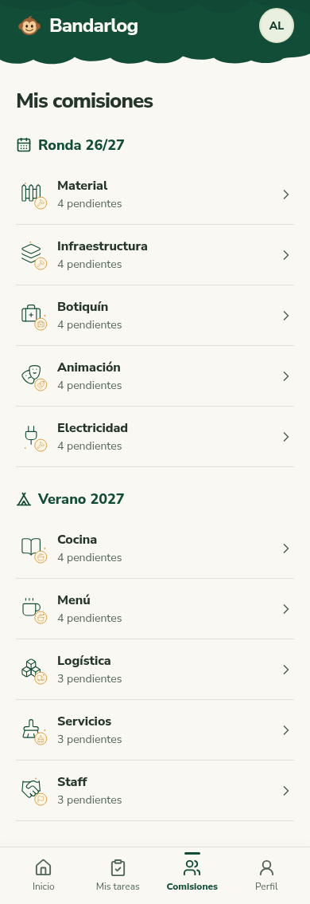
Escenario de diez comisiones. La lista continúa por scroll sin diez tarjetas grandes.
F14 · Comisión · Responsable
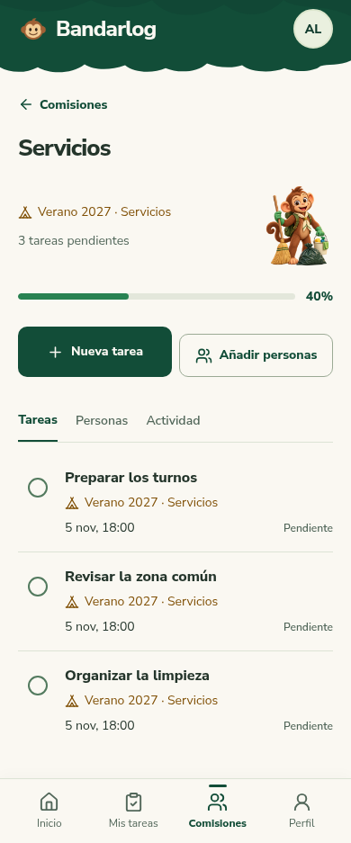
Responsable: gestiona esta comisión. Fixture personal: 3abiertas/2done/5total, progreso40%. Ver VSCOUTER para consulta sin gestión.
F15 · Proyectos anuales
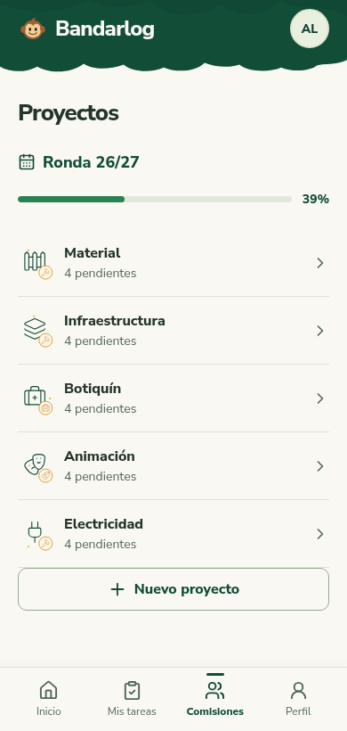
Un único encabezado del proyecto. Fixture:33total/13done/20open; progreso39%.
F16 · Campamentos
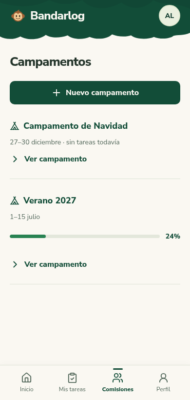
Navidad es un segundo proyecto vacío de muestra; no se inventa progreso. Verano utiliza etapa personal del fixture:41total/10done/31open.
F17 · Seguimiento · Coordinación
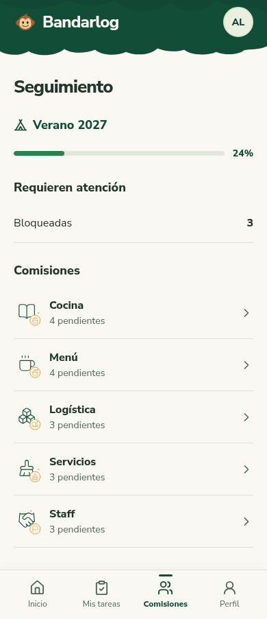
Coordinación, etapa personal del mismo fixture: campamento41total/31open/10done y3bloqueadas. Alcance de backend pendiente de prueba.
F18 · Personas e invitaciones
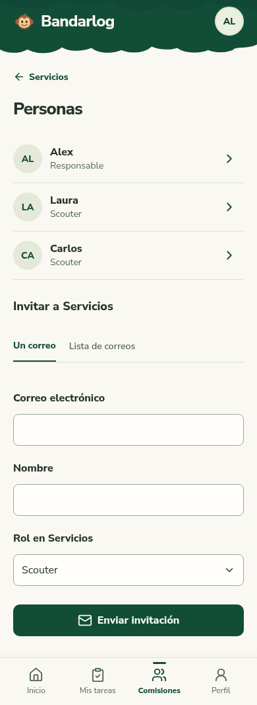
Destino bloqueado a Servicios; desde proyecto, al proyecto de origen. Lista de correos comparte destino.
F19 · Perfil y avisos
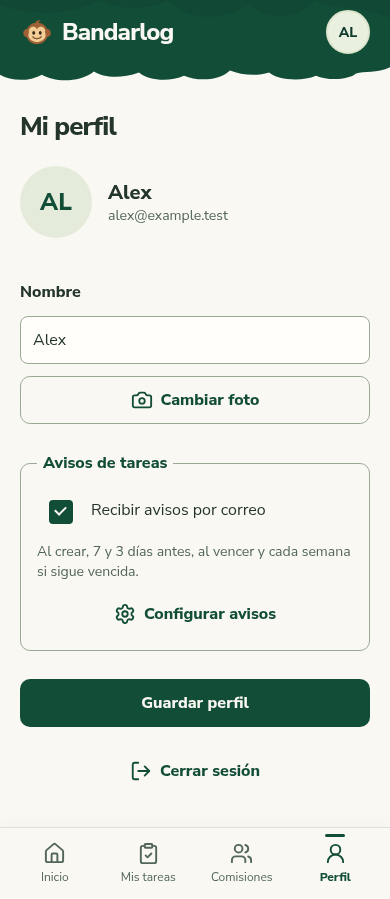
Composición móvil a390px. Datos sintéticos; controles sin acciones reales.
F20 · Nueva tarea · validación
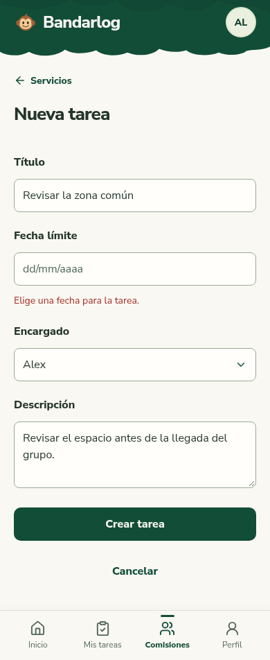
Composición móvil a390px. Datos sintéticos; controles sin acciones reales.
F21 · Cuenta sin asignaciones
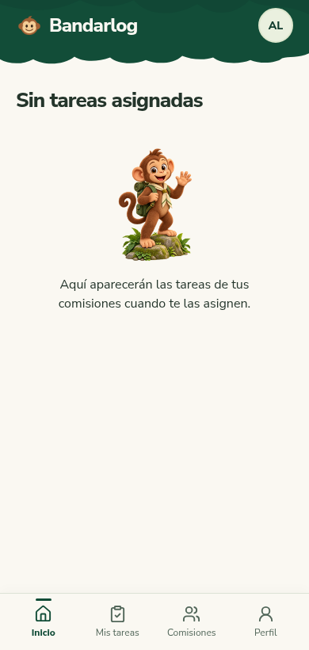
Cuenta vacía: sin estadísticas ni obligaciones inventadas.
F22 · Carga · sin destello de login
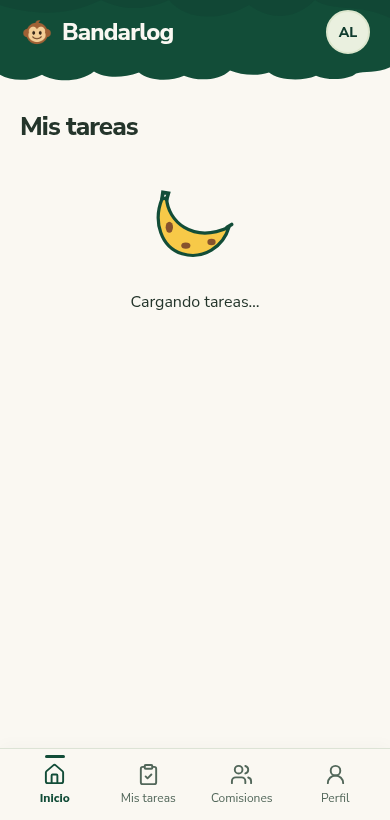
Estado estático del indicador existente. No representa porcentaje de progreso real.
F23 · Sin conexión · reintentar
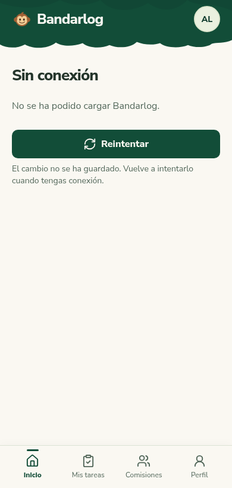
No se confunde falta de red con cierre de sesión; conservar contexto seguro.
F24 · Sesión caducada
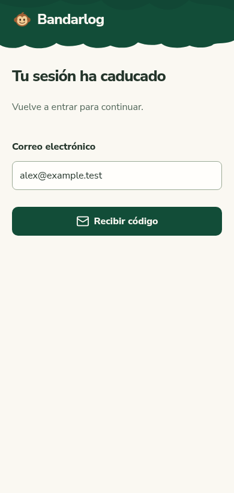
Renovación y límites se prueban en backend después de implementar.
F25 · Código incorrecto · recuperación
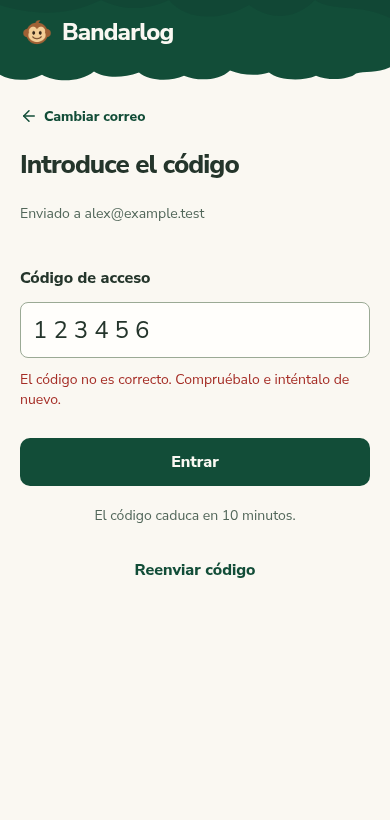
Composición móvil a390px. Datos sintéticos; controles sin acciones reales.
F26 · Foto omitida · nombre validado
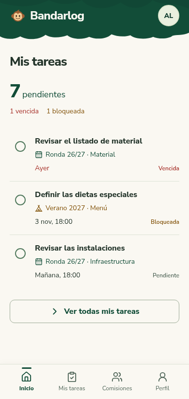
Destino tras Continuar sin fotografía: Inicio con avatarAL, nombreAlex y sin repetir la pregunta. Persistencia servidor pendiente de implementación.
F27 · Google cancelado · alternativa
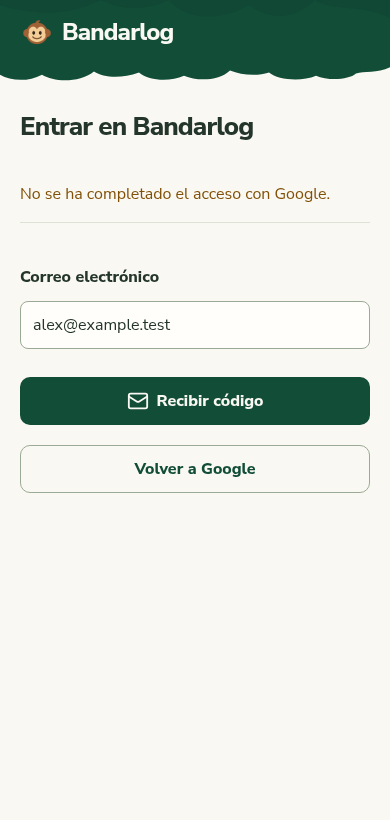
Google configurado y cancelado; no se crea acceso ni se cambia la cuenta.
V01 · Acceso · sin Google
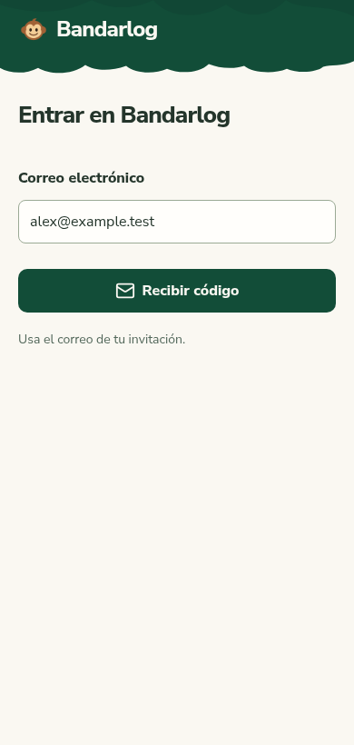
Google se omite cuando falta configuración.
V02 · Comisiones · una comisión
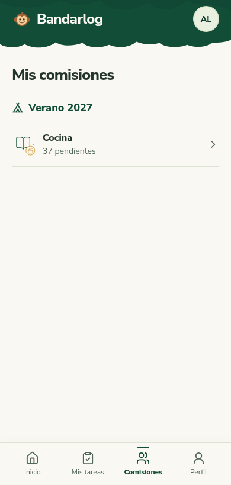
Composición móvil a390px. Datos sintéticos; controles sin acciones reales.
V05 · Comisiones · cinco comisiones
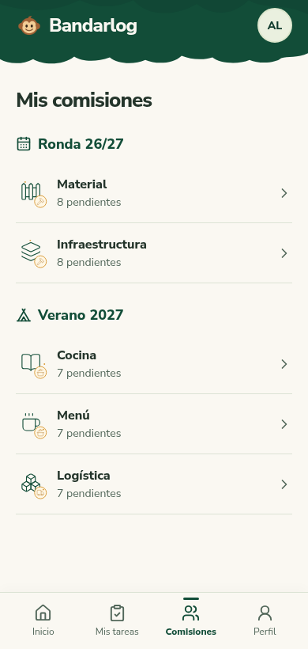
Composición móvil a390px. Datos sintéticos; controles sin acciones reales.
VSAFE · Áreas seguras · esquema
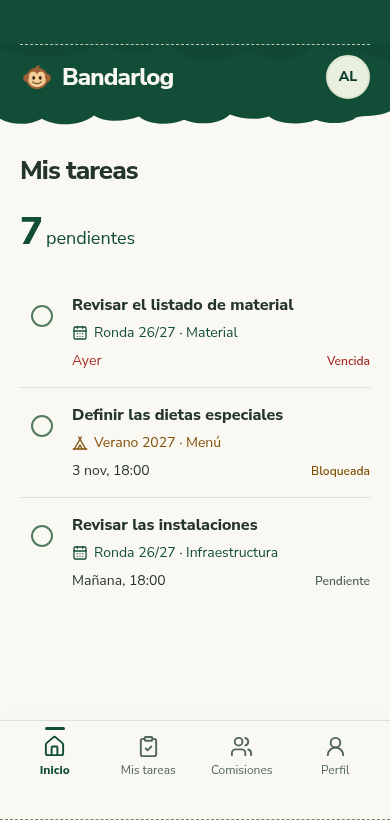
Esquema de márgenes: top 44px y bottom 34px simulados; no dispositivo físico.
VLAST · Secuencia · queda una tarea
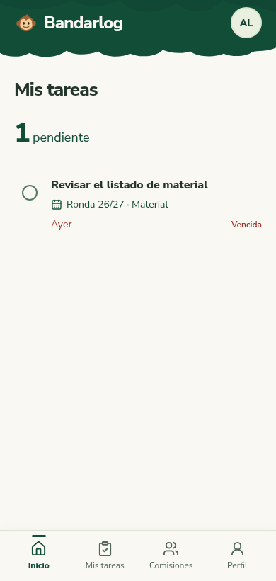
Frame anterior a F07: las otras6 propias ya se completaron. Completar esta última conduce a0 y satisfacción; la transición no se simula en HTML.
VWAIT · Código · espera de reenvío
Estado de espera del mismo desafío; valor42s ilustrativo. Temporizador y límites se implementarán en servidor/cliente.
VEXHAUST · Código · intentos agotados
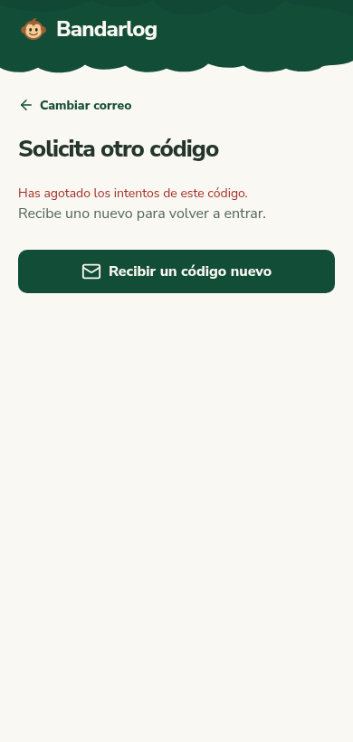
El desafío anterior queda inválido. Esta muestra no consume ni envía códigos.
VNAME · Primer acceso · nombre vacío
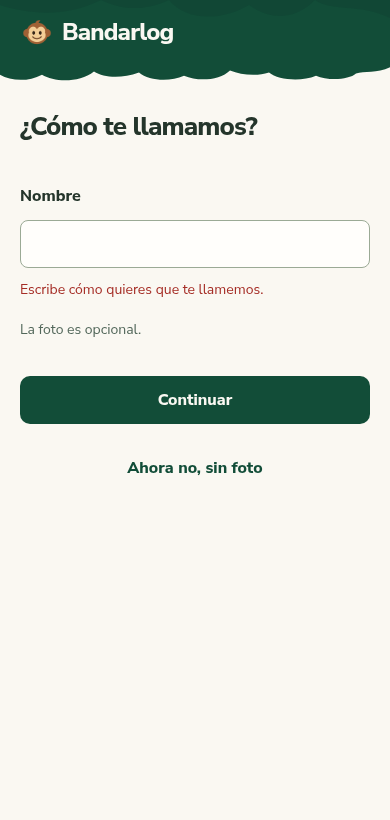
Campo required. Ambas acciones deben validar el nombre antes de guardar; omitir nunca omite nombre.
VRETURN · Editor cancelado · nombre conservado

Retorno desde Cancelar de F05: nombreAlex y foto sin cambios. No se pierde el dato escrito.
VBULK · Invitación · lista de correos
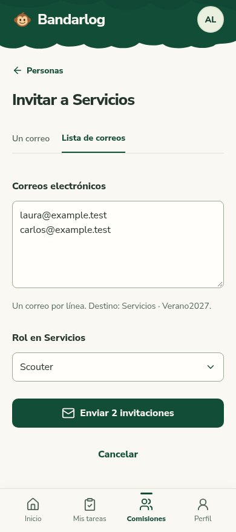
Lista abierta con2direcciones sintéticas. El destino no se cambia desde este formulario.
VBULKERROR · Invitación · correo incorrecto
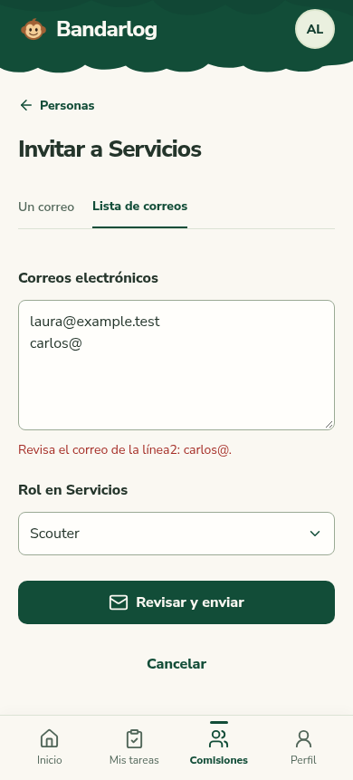
Error local concreto; toda la lista permanece editable y no se envía parcialmente sin confirmarlo.
VPROJECTINVITE · Invitación · desde proyecto
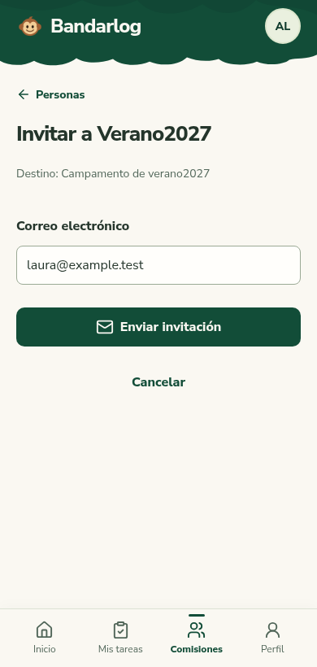
Invitación de proyecto: destino fijado al proyecto, sin convertirla en comisión ni asignar rol global.
VSCOUTER · Servicios · Scouter en consulta
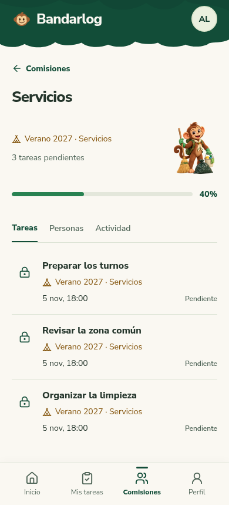
Scouter: no Nueva tarea/Añadir personas ni círculos sobre tareas ajenas. Solo lectura del equipo autorizado.
VSELECT · Selector · abierto
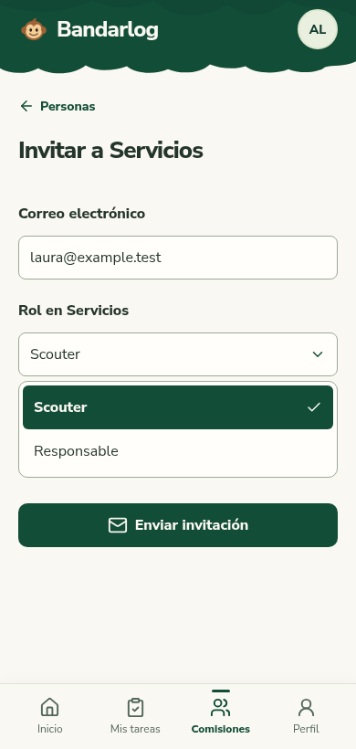
Selector diseñado para la UI; opción seleccionada verde y confirmada con check, objetivos44px. Interacción real reutilizará Select existente.
VSENDERROR · Nueva tarea · envío fallido
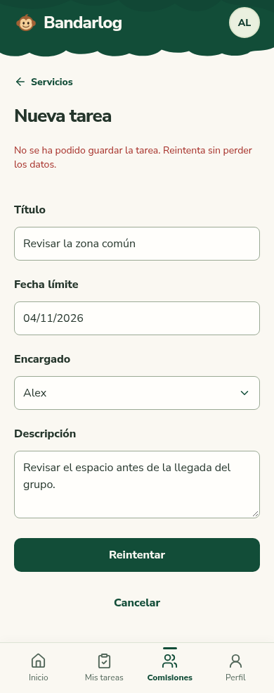
Fallo de envío distinto de validación: título, fecha, encargado y descripción se conservan.
VINVITESENDERROR · Invitación · envío fallido
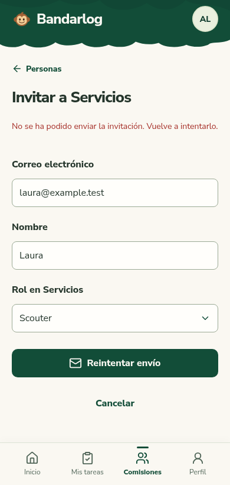
DestinoServicios y datos conservados; no se afirma que se haya enviado la invitación.